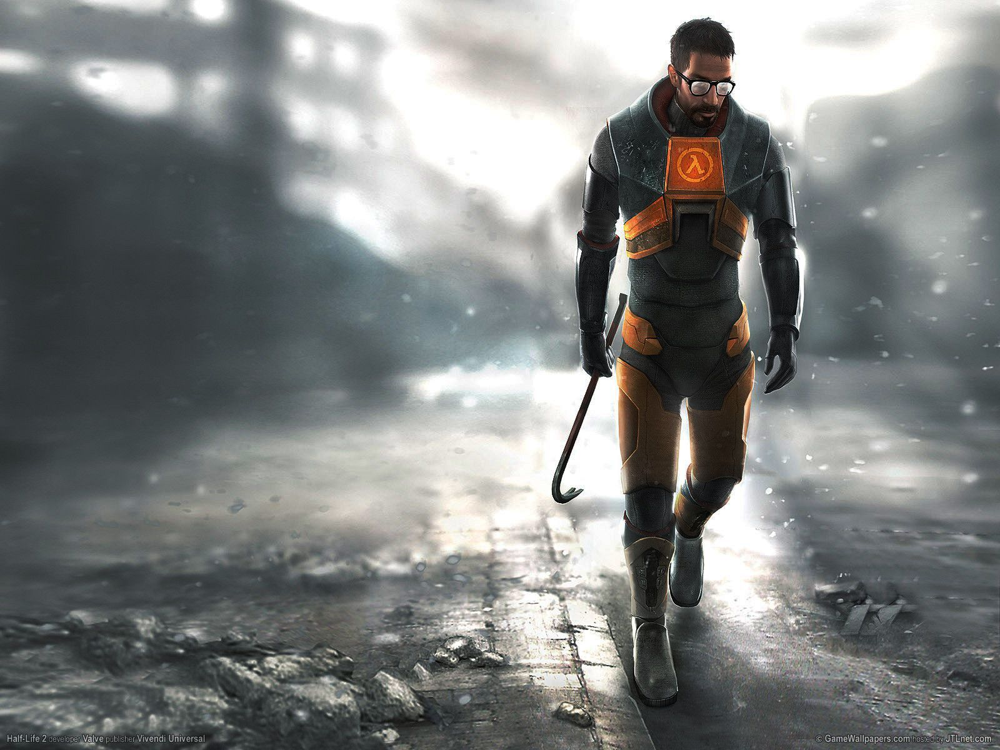

A science fiction first-person shooter video game developed by Valve, released in 1998 by Sierra Studios for Microsoft Windows.Players assume the role of Dr. Gordon Freeman, who must fight his way out of a secret research facility after a teleportation experiment goes disastrously wrong, fighting enemies and solving puzzles[1].
Unlike many other games at the time, Half-Life features no cutscenes; the player has uninterrupted control of Freeman, and the story is told through scripted sequences seen through his eyes. Valve co-founder Gabe Newell said the team had wanted to create an immersive world rather than a "shooting gallery". The game's engine, GoldSrc, is a heavily modified version of the Quake engine licensed from id Software.[2]

It is tagged as FPS (First Person Shooter), Classic, Sci-fi (Science Fiction), Singleplayer, and Action by some users and Players. It's Genre is Action. As stated above. the Person will play as the role of Dr. Gordon Freeman, a Physicist that is said that he will join in the Black Mesa Research Facility.
The Game Story (Introduction or the Game Plot)
Dr. Gordon Freeman, a Physicist who is said that he will join in the Black Mesa Research Facility. He is one of the users of the HEV Suit (Hazard EnVironment Suit) or the Hazard Suit. he is then told to be one of the tester of the "Anti-Mass Spectrometer". but, while the testing of machine is going on, a sudden Catastrophe happened. It's called as "Resonance Cascade". And, as an effect of the said Catastrophe, the Dimensional Boundary between Earth and the Game's Alien Dimension "Xen" Ripped apart, causing the aliens to teleport to Earth from Xen. As the "Resonance Cascade" is still happening, Gordon Freeman, the Tester, is apparently teleported to different locations in the Xen Dimension. the last location he teleported was in circle of Vortigaunts. And after that, everything beacme black. Then, the adventure of Gordon Freeman, one of the survivors, starts.
After a mere moment, he woke up from unconsciousness. all he saw was the damages in the testing chamber, damaged machines, dead scientists, injured personnel, so much hazards, And also, stray aliens all around the facility. his main mission is that time is to think and make a way out of the facility. as he was going out of the facility, a scientist called him and congratulates that he survived the accident/failure/catastrophe. and all he was to do is to go out of the facility.
Going out of the facility, Gordon Freeman killed many aliens, as if, he needed to do it so that he won't be killed. He encountered so many alien creatures like Parasitic Crab, Vortigaunts, Spitting lizard-like alien, and many more. he is also helping and being helped by scientists around the facility. later on, as he got out of the facility, he met another enemy, the Black Ops, which is the one who was doing anything just to hide the said accident. Later on, he made his way to the Lamba Complex, and gone through the Nuclear Reactor Chamber. Later on, he was said that his next mission is to go the the Alien Dimension "Xen" and kill the Nihilanth - Alien creature Entity that keeps the Dimensional Boundary open.
He go to Xen with a help of a teleportation device, that also failed while opening the portal. He made a long journey killing Xenian creatures and teleporting to different Places in the dimension. and at the End of the game, He fights the Nihilanth and, because it is only a Game, he won in the fight, a large explosion happend and teleported him into a Interdimensional travelling train with "G-Man", a mysterious man always watching his steps, and said to Gordon Freeman that he passed the test, and he was now a Black Mesa Personnel.
Self review (Lol):
This is the first Game, and the best game I've ever played. just because I want some Science, Physics, and some First Person Shooter Games (FPS) Games, I've found this. and also, it is currently installed in my computer, along with Counter Strike (I'll show that also later). This game comes with a series. Half Life, Half life:Opposing Force , Half Life :Blue Shift, Half Life:Decay, Half Life 2, Half Life 2 Deathmatch, Lost Coast, Episode One and Episode Two.
Want to buy it? if you want, click here